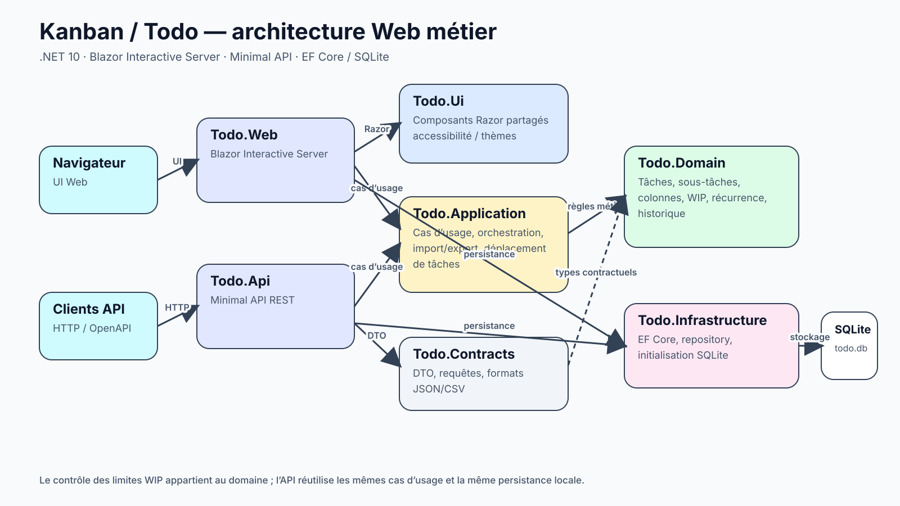
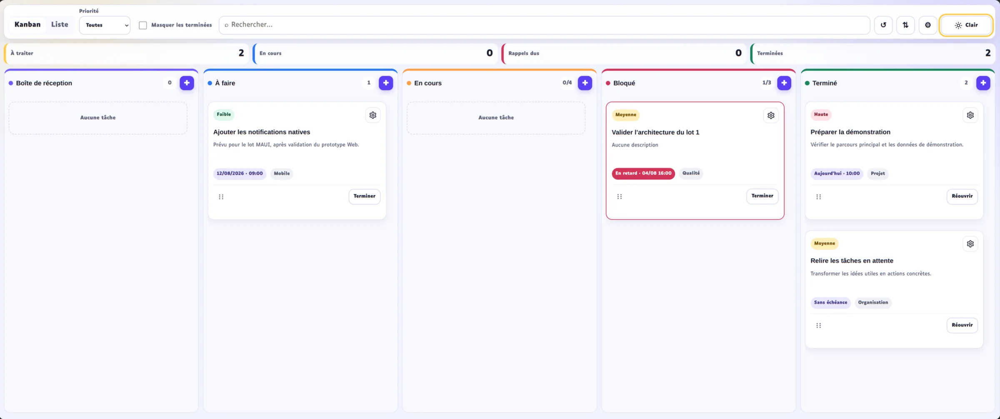

Tableau configurable montrant tâches, priorités et limites WIP.
Problème
Ce que le projet cherche à résoudre
Créer un gestionnaire de tâches qui combine interactions Kanban, règles métier, historique, import/export et API sans dupliquer la logique entre l’interface Web et les endpoints HTTP.
Architecture
Comment le système est structuré
Todo.Domain contient tâches, sous-tâches, étiquettes, colonnes, historique, paramètres et invariants.
Todo.Contracts regroupe DTO, requêtes, formats d’import/export et exceptions contractuelles.
Todo.Application orchestre les cas d’usage et le transfert de données.
Todo.Infrastructure fournit EF Core, SQLite, repository et initialisation/mise à niveau de la base.
Todo.Ui porte l’interface Razor, tandis que Todo.Web l’héberge en Blazor Interactive Server.
Todo.Api expose les mêmes capacités applicatives via des Minimal APIs et OpenAPI.
Décisions
Décisions techniques
Faire des limites WIP une règle métier. La limite d’une colonne n’est pas un simple avertissement visuel : le domaine la modélise et les déplacements/API réutilisent cette règle.
Partager les cas d’usage entre Web et API. Todo.Web et Todo.Api s’appuient sur Todo.Application afin d’éviter une logique métier différente selon le point d’entrée.
Persister la configuration du tableau. Ordre, visibilité, couleur et limites WIP des colonnes sont conservés en base plutôt que reconstruits uniquement dans l’état de l’interface.
Prévoir une alternative clavier au drag-and-drop. Les déplacements restent accessibles sans dépendre exclusivement du glisser-déposer.
Schéma
Vue d’ensemble de l’architecture
Le schéma complète l’étude de cas avec les composants et frontières réellement présents dans le projet.

Architecture Web métier avec règles WIP dans le domaine et persistance EF Core/SQLite.
Implémentation
Points techniques principaux
Création, modification, suppression, achèvement et réouverture de tâches.
Sous-tâches, étiquettes, priorités, échéances, rappels, récurrence et historique horodaté.
Vues Liste et Kanban avec glisser-déposer, réorganisation persistante et alternative clavier.
Cinq colonnes configurables avec nom, ordre, couleur, visibilité et limite WIP.
Import/export JSON ou CSV, thèmes clair/sombre et réduction des animations.
API REST pour tâches, tableau, paramètres, historique et données.
Persistance EF Core/SQLite, tests multi-couches, formatage, audit NuGet et CI GitHub Actions.
Difficultés
Difficultés résolues
Maintenir la cohérence des déplacements Kanban. Le changement de colonne, l’ordre persistant et les limites WIP doivent rester cohérents pour le drag-and-drop, le clavier et l’API.
Historiser sans polluer les vues. Les actions importantes sont persistées et exposées par un historique dédié plutôt que dispersées dans l’état UI.
Faire évoluer une base SQLite locale. Le prototype applique des mises à niveau additives afin de préserver les données créées par les versions précédentes.
Qualité
Tests et garde-fous
Tests du domaine, de l’application, de l’infrastructure SQLite et du formatage d’interface.
dotnet format vérifie le style avant build et tests.
La CI audite également les dépendances NuGet directes et transitives vulnérables.
Livraison
Livraison et CI/CD
GitHub Actions exécute restore, format, build Release, tests et audit NuGet sur develop, main et pull requests.
Le Makefile expose make verify et les commandes de lancement Web/API.
Nullable, analyse statique et builds déterministes renforcent la quality gate .NET.
Résultats
Résultats observables
Un gestionnaire qui combine liste, Kanban avancé et règles métier dans une même application.
Des colonnes configurables et limites WIP persistées plutôt qu’un tableau uniquement visuel.
Une API REST et des formats d’import/export qui réutilisent les mêmes données métier.
Compromis
Compromis techniques
SQLite rend le projet simple à lancer et à conserver localement, mais ne vise pas un service collaboratif distribué.
Les rappels sont signalés lorsque l’application Web est ouverte ; aucune infrastructure de notification native ou serveur n’est incluse.
Le projet reste volontairement mono-utilisateur et sans authentification pour concentrer la démonstration sur le domaine et les interactions.
Limites
Limites assumées
Le branding public reste encore partagé entre le nom du dépôt Kanban et le nom interne Todo.
L’authentification et la collaboration multi-utilisateur ne sont pas incluses.
Les notifications natives et la synchronisation hors ligne avec l’API ne sont pas implémentées.
Suite
Prochaines étapes
Harmoniser le branding Kanban/Todo avant une release utilisateur stable.
Ajouter authentification et collaboration uniquement si le projet doit dépasser le périmètre mono-utilisateur local.
Externaliser les rappels/notifications si l’application doit prévenir l’utilisateur lorsqu’elle n’est pas ouverte.
Captures
Le produit en situation
Des états complémentaires sélectionnés pour montrer l’interface et les parcours réellement implémentés.

Même tableau en thème clair.
Preuve de compétence
Ce que ce projet démontre
Règles métier explicites autour des colonnes et limites WIP.
Réutilisation des mêmes couches Application/Domain depuis l’interface Blazor et l’API.
Attention portée à l’accessibilité, à la persistance des interactions et à l’industrialisation .NET.